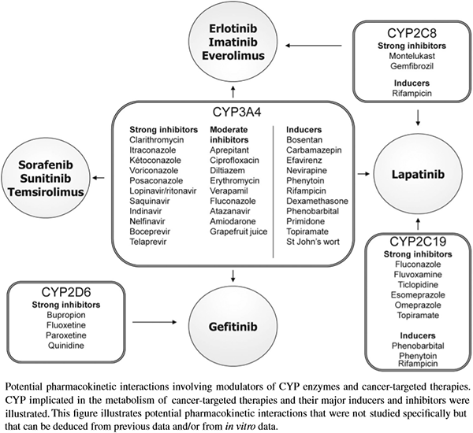

ICO 24h
MÓDULO 3 : Farmacia hospitalaria de dispensación ambulatoria en oncología
- Interacciones Farmacocinéticas: Las interacciones farmacocinéticas son aquellas debidas a la influencia que tiene un fármaco sobre el ciclo de otro en el organismo. Incluye alteraciones en la absorción, distribución, metabolismo y excreción (ADME), lo que lleva a modificaciones en la concentración y la duración de la disponibilidad del antineoplásico en los sitios de unión con los receptores.
- Absorción: Las interacciones farmacocinéticas relacionadas con la absorción, suelen modificar la biodisponibilidad, por la cantidad total del medicamento absorbido, o por la variación de la velocidad que lo hace. Estos cambios pueden deberse a cambios de pH gastrointestinal, a la formación de quelatos o compuestos no absorbibles, a la toxicidad gastrointestinal o a la alteración de la absorción.
- Ejemplo: La absorción de dasatinib es dependiente del pH y su administración durante las 2 horas tras la administración de un antiácido, anti-H2 o IBP, puede reducir su exposición sistémica en un 50-60%. Los antiácidos pueden ser una alternativa a los anti-H2 o IBP pero deberían tomarse almenos 2 horas antes o despres del dasatinib.
- Metabolismo - Citocrom P450: En oncología, la mayoría de los fármacos y/o de sus metabolitos pueden inhibir o inducir una o más de las isoformas del citocromo P450, alterando por ello el aclaramiento de los fármacos administrados concomitantemente como consecuencia de estas interacciones farmacológicas.
Potenciales interacciones farmacocinéticas que afectan a inhibidores/inductores del CYP i a la terapia dirigida oral:
